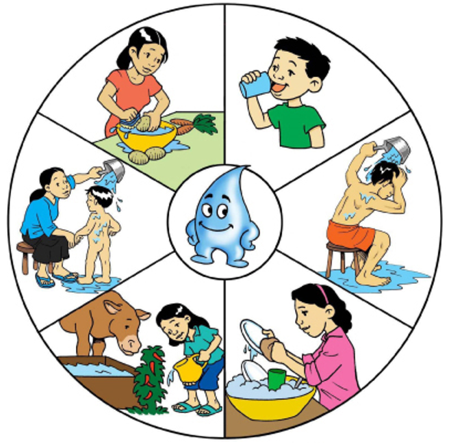
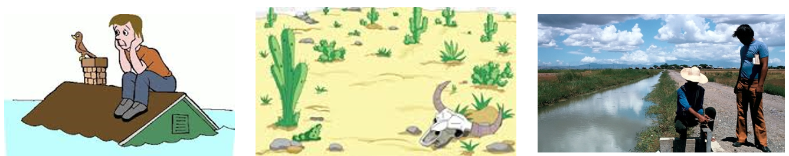

<ion-header>
  <!-- <ion-navbar>
    <ion-title>infofourth</ion-title>
  </ion-navbar> -->
</ion-header>

<ion-content padding class="bgimg2">
  <h1 class="fontLa" text-center>ประโยชน์ของดัชนีชี้วัดการจัดการน้ำ</h1>
  <h2 class="fontL">ระดับบริหาร</h2>
  <div class="fontL">
    <ion-icon name="star-half"></ion-icon>
    <label>มีข้อมูลด้านทรัพยากรน้ำและโครงสร้างพื้นฐานที่บูรณาการจากหน่วยงานภาครัฐ
      สำหรับวางแผนบริหารจัดการน้ำอย่างยั่งยืน</label>
  </div>
  <div class="fontL">
    <ion-icon name="star-half"></ion-icon>
    <label>มีดัชนีชี้วัดการจัดการน้ำเชิงระบบและเชิงพื้นที่ เพื่อใช้ประโยชน์จากน้ำอย่างเหมาะสม
      เกิดความสมดุลระหว่างศักยภาพของแหล่งน้ำและการใช้น้ำ รวมถึงการอนุรักษ์และจัดการปัญหาภัยพิบัติจากน้ำ</label>
  </div>
  <div class="fontL">
    <ion-icon name="star-half"></ion-icon>
    <label>มีเครื่องมือที่มีคุณภาพเพื่อประกอบการตัดสินใจเชิงนโยบายในการบริหารจัดการน้ำในแต่ละพื้นที่</label>
  </div>
  <div text-center>
    
  </div>

  <h2 class="fontL">ระดับชุมชน</h2>
  <div class="fontL">
    <ion-icon name="star-half"></ion-icon>
    <label>ได้ข้อมูลเฉพาะของพื้นที่ สำหรับนำไปวิเคราะห์ภาพรวมการบริหารจัดการทรัพยากรน้ำในพื้นที่</label>
  </div>
  <div class="fontL">
    <ion-icon name="star-half"></ion-icon>
    <label>ผู้นำชุมชนสามารถนำข้อมูลไปใช้ในการบริหารจัดการน้ำ รวมทั้งปรับปรุงและแก้ไขปัญหาด้านน้ำของพื้นที่นั้นๆ เช่น
      เพิ่มแหล่งน้ำเพื่อการอุปโภคบริโภค/การเกษตร ป้องกันและแก้ปัญหาอุทกภัย ฟื้นฟูต้นน้ำ ปรับปรุงปัญหาคุณภาพน้ำ
      ฯลฯ</label>
  </div>
  <div text-center>
    
  </div>
  <div text-center>
    
  </div>
</ion-content>